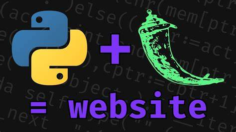

Open CV
Capturing video, image processing, face/hand/eye detection.
MediaPipe
Hand/face/pose detection with pre-trained models.
TensorFlow
For custom gesture or object recognition models.
Speech Recognition
Recognizes speech using Google API or others.
Frontend
The Frontend of an AI Virtual Mouse provides a user-friendly interface for interacting with the system, switching control modes (gesture, voice, eye, head), adjusting settings, and monitoring system feedback. It acts as the visual layer that users interact with — whether it’s a desktop GUI or a web-based dashboard.
 HTML, CSS, JavaScript
Structure and design of a web interface.
Add animations, toggles, and mode selection.
HTML, CSS, JavaScript
Structure and design of a web interface.
Add animations, toggles, and mode selection.
Backend
Backend (Logic & Processing) - Powered by Flask Flask handles data processing and API communication between the frontend and gesture recognition modules. It processes inputs from MediaPipe (for hand gestures), OpenCV (for eye tracking), and voice commands to determine mouse actions. 
If a web interface is used, the backend communicates with it using Flask, allowing real-time updates and control through a browser. In essence, the backend is responsible for understanding user input, deciding what to do, and executing those commands seamlessly.Working
The AI Virtual Mouse works by using artificial intelligence and computer vision to interpret human gestures, facial movements, and voice commands as inputs to control the computer — replacing traditional mouse actions. The system captures live video from the webcam using OpenCV, and processes it in real-time through MediaPipe, which detects hand landmarks, face orientation, or eye movements. These inputs are analyzed to determine gestures, such as finger pinches for clicking or hand motion for moving the cursor. Once a gesture is recognized, libraries like pyautogui are used to move the mouse pointer, perform clicks, or scroll the screen. In addition to gesture control, the AI Virtual Mouse also includes a voice recognition module using the SpeechRecognition library. This allows users to speak commands like “open calculator” or “scroll down,” which the system translates into actions. For auditory feedback, the pyttsx3 library converts system responses into speech. The backend manages all these modules and ensures smooth switching between them, while the frontend (optional) provides a user-friendly interface to choose modes, view real-time feedback, and change settings. Altogether, this creates a hands-free, accessible, and intuitive computer control experience.